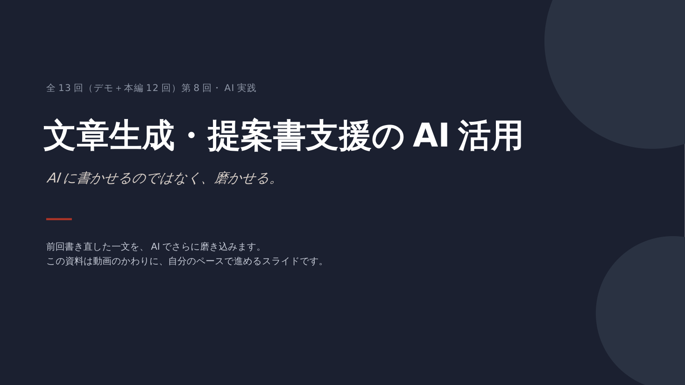

この回の目的
AIに文章を「書かせる」のではなく「磨かせる」使い方を身につけること。
扱う内容
- AIに下書きを作らせた後、自分の言葉に戻す工程の重要性
- 厳しいレビューの引き出し方
前
これで大丈夫？
後
これがダメだとしたら、理由トップ3は？
「大丈夫？」と聞くと、AIは大体「大丈夫」と言う。聞き方を変えると、本気で指摘してくる。
ワーク
第7回で書き直した一文をAIに厳しくレビューさせ、さらに磨く。
アウトプット
完成した文章＋レビューで指摘された弱点メモ。
AIに文章を「書かせる」のではなく「磨かせる」使い方を身につける。

矢印キーでも進めます。
AIに文章を「書かせる」のではなく「磨かせる」使い方を身につけること。
前
これで大丈夫？
後
これがダメだとしたら、理由トップ3は？
「大丈夫？」と聞くと、AIは大体「大丈夫」と言う。聞き方を変えると、本気で指摘してくる。
第7回で書き直した一文をAIに厳しくレビューさせ、さらに磨く。
完成した文章＋レビューで指摘された弱点メモ。